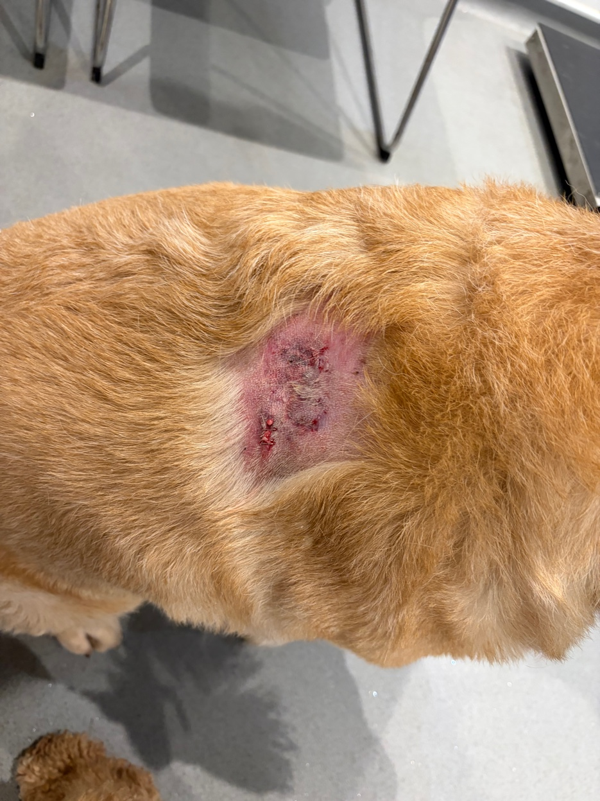
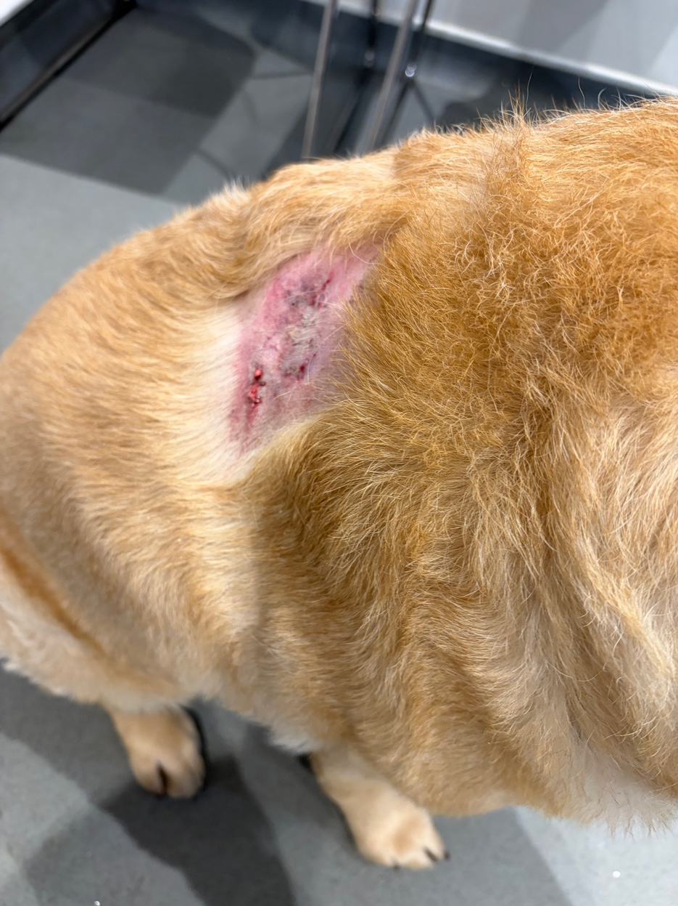
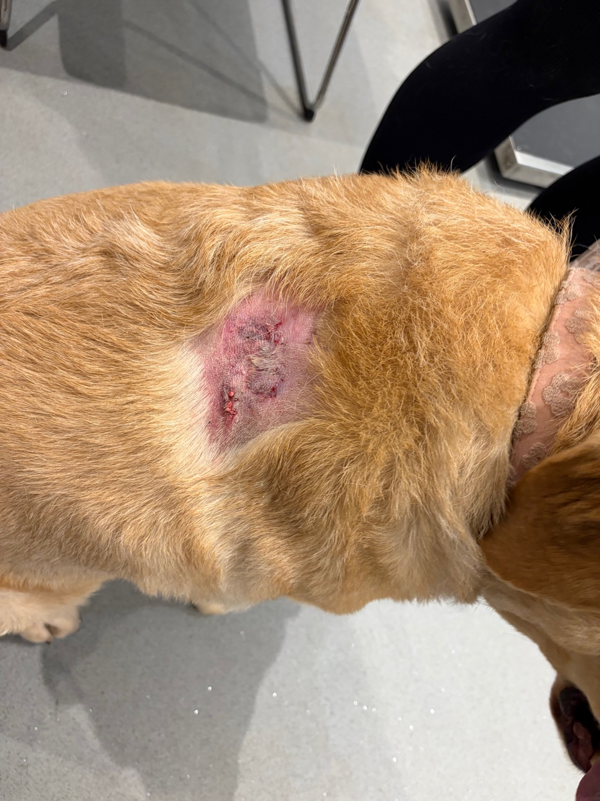

Meet Missy
Before we get into what happened, you need to know about Missy.
Missy is an 8-year-old yellow Labrador and she is, without question, the most gentle, placid and sweet-natured dog in the world. If you have ever met a Labrador who simply radiates calm, warmth and unconditional love for every living thing she encounters — that is Missy. She is also Maverick's older sister, and the two of them have shared a home, a sofa and countless walks together for as long as Maverick can remember.
She did not deserve what happened on the evening of 18th March.
“Missy is the most placid, sweet dog in the whole wide world. What happened to her that evening was completely without provocation.”
What Happened
We were five minutes into our evening walk — both Missy and Maverick with us — when we spotted a dog on the edge of a driveway ahead. At first we thought nothing of it. The dog was still and didn't react as we approached, so we carried on walking.
A few more steps and everything changed. The dog ran forward with its hackles raised and launched itself at Missy without a single moment of warning and with absolutely no provocation. No collar. No lead. No owner in sight.
We shouted. We tried everything we could to get the dog off. It was latched on and it wasn't letting go. The kind of situation that happens in seconds but feels like it lasts much longer.
It only released when an owner came out from a nearby house — not even the house whose driveway the dog had been on — grabbed the dog and pulled it away. He was apologetic and distressed, saying he had no idea the dog had escaped from his garden. By then, the damage was already done.
My wife checked Missy immediately. She was bleeding.
Content warning: The photographs below show Missy's injuries at the vets that evening. They are not graphic in the extreme, but they do show the wound clearly. Please scroll past if you would prefer not to see them.



Missy at Portchester Vets on the evening of 18th March 2026. The wound required staples, pain relief and antibiotics.
Portchester Vets — Thank You
It was late. We knew our vets — Portchester Vets in Portchester, Hampshire — were closing within minutes. I called them anyway. I explained what had happened, that Missy was injured, and that we were only minutes away on foot. They told us to come straight in.
We walked there within minutes. And what followed was one of those moments that reminds you how much good there is in people who chose this profession.
They stayed on. They treated her. They were extraordinary.
The staff at Portchester Vets did not have to stay late for us. They did. Every single member of staff that evening was calm, kind, professional and clearly genuinely invested in Missy's wellbeing.
Missy needed staples, pain relief and antibiotics. She got all of it, carefully and compassionately, from a team who went well beyond what their shift required of them.
We cannot thank them enough. If you are in the Portchester area and are looking for a vet who will treat your dog as if they are their own — we cannot recommend them highly enough.
Missy is now recovering well at home. She is comfortable, she is being thoroughly spoiled, and Maverick has appointed himself her official bedside companion. She is going to be absolutely fine.
What to Do if Your Dog is Attacked
We had no idea what to do in the moment. We acted on instinct — shouting, trying to intervene — and thankfully it resolved before the situation became any worse. But we have since done the research that we wish we had done before that evening. Here is what the experts advise.
During the attack:
- Stay as calm as you can — panic escalates the situation and agitates both dogs further.
- Do not try to physically separate the dogs by pulling them apart — this can turn puncture wounds into serious tears and puts you at serious risk of being bitten.
- Try to distract the attacking dog from a distance first — loud clapping, shouting, throwing something nearby. Sometimes this alone is enough.
- If you have a jacket, bag or umbrella, use it as a barrier between the dogs — redirect the attacking dog's attention onto the object rather than your dog.
- If the dog is locked on and won't release, some experts suggest twisting the collar firmly to restrict the airway momentarily — this is a last resort and should only be used if nothing else is working.
- Lifting the attacking dog's back legs off the ground — like a wheelbarrow — can also break their grip as they lose their footing and stability.
Immediately after the attack:
- Get the owner's name, address and contact details — and a photo of their dog if possible. Even if they are apologetic and cooperative, you need this information.
- Note any witnesses and get their details too. Courts place significant weight on notes made while events are fresh.
- Photograph your dog's injuries as soon as possible — even if they look minor. Some wounds appear more serious once the adrenaline has worn off.
- Get to a vet immediately — even if the injuries look superficial. Internal damage, infection risk and shock can all be issues that aren't visible on the surface.
- Report the incident to your local council's dog warden and, if appropriate, to the police on 101. An off-lead dog that attacks another animal with no owner present is a serious matter.
What You Can Carry to Protect Your Dogs
We had nothing with us that evening. We have since looked into what options exist in the UK and what is actually legal to carry. Here is a straightforward summary.
Important: Pepper spray is illegal to carry in the UK. Do not carry it — possession carries serious legal penalties regardless of your intention. The products below are all legal UK alternatives.
Formerly known as Bite Back, this is used by Royal Mail, police and vets. It creates a vapour cloud of natural oils around the dog's muzzle that deters biting without causing harm. Effects last 10–20 minutes. Available from vonwolfshop.co.uk.
A citronella-based spray that is effective against low to moderate aggression. Studies have shown it to be as effective as pepper spray for deterrence without the harmful effects. Available on Amazon UK.
A loud blast of sound can startle and interrupt an approaching dog before a confrontation escalates. Non-chemical, completely legal and effective at a safe distance. Small enough to clip to a lead or bag.
A hiss of compressed air that can interrupt behaviour and startle a dog mid-approach. Most effective as a deterrent before an attack has begun rather than during one. Widely available in pet shops.
Our honest recommendation is to keep a K9-17 or citronella spray clipped to your lead on every walk. We never thought we would need one. We were wrong.
If the Owner Won't Pay
We were fortunate. The owner of the dog that attacked Missy took full responsibility and covered the vet bill without hesitation. Not everyone is that fortunate. Here is what your options are if you are not.
If vet bills are under £10,000 you can pursue the owner through the small claims court without a solicitor. You can represent yourself and the process is relatively straightforward. Your local county court can provide guidance.
An owner whose dog is dangerously out of control can face a fine of up to £5,000, a ban on dog ownership and in extreme cases a custodial sentence. Report the incident to police on 101 — this creates a record even if they do not pursue it immediately.
Your local council's dog warden can take action against irresponsible owners and their dogs. Report incidents even if you don't want to pursue legal action — it builds a record that protects the next dog and owner in the same situation.
If your dog is insured, check whether your policy covers attacks by other dogs. Many do. Your insurer may also pursue the other owner on your behalf if they can establish liability.
“Document everything while it is fresh — owner details, witness details, photographs of injuries and the attacking dog. If you need to take action later, this information is everything.”
Missy Now
She is home. She is warm. She is being thoroughly looked after by everyone in this house — including a certain cockapoo who has not left her side since she got back from the vets.
We are grateful it wasn't worse. We are grateful for Portchester Vets and every member of their team who stayed late that evening to make sure she was properly cared for. And we are writing this because if it helps even one dog owner feel more prepared than we were, then it was worth putting into words.
Look after yourselves out there, and look after your dogs. 🐾
Join the Maverick's Adventures family
Sign up for updates, a free activity pack for little ones and early access to Book 2.
Where Is Maverick? — Available Now
The first book in the Maverick's Adventures series. A rhyming hide-and-seek story for ages 2–6.
Buy on Amazon →Until next time,